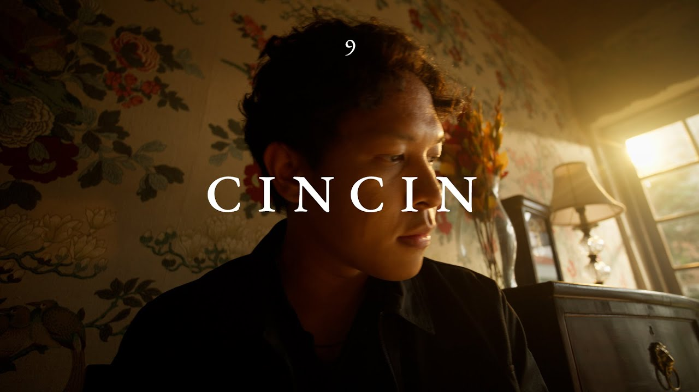

TITLE : Cincin
TITLE : Cincin
Singer : Hindia
Genre : INDIE
Album : Lagipula Hidup Akan Berakhir
Release : 7 Juli 2023
Duration : 4 minute 27 seconds

TITLE : 24 K
Singer : Bruno mars
Genre : POP
Album : 24 K
Release : 5 maret 2021
Duration : 3 minute 46 seconds